1.1.3. Table d’effectifs (ou proportions) = Graphique à barres
plot(table(bd$freres.soeurs))
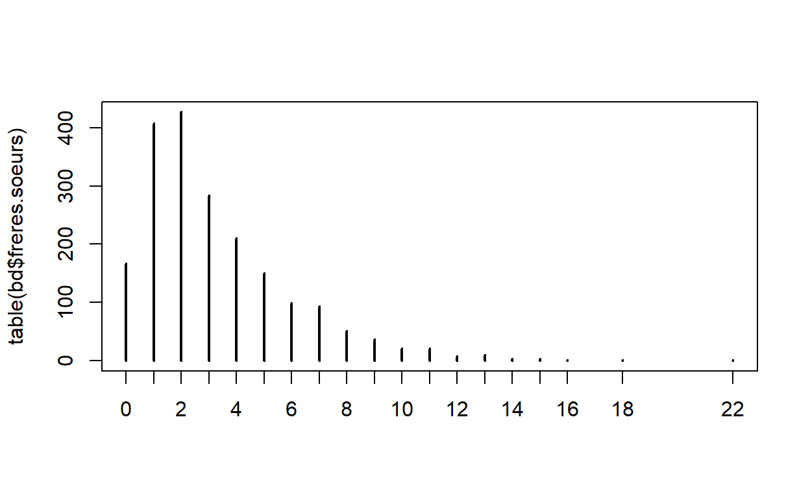
Fonctions de base s’accompagnent de nombreux arguments dont plusieurs peuvent être utilisés pour tous les graphiques
plot(table(bd$freres.soeurs),
col="red",
main = "Nombre de frères et soeurs",
ylab = "Effectif",
xlab="Nombre de frères et soeurs",
ylim=c(1, 500),
xlim=c(0, 25),
type="b")
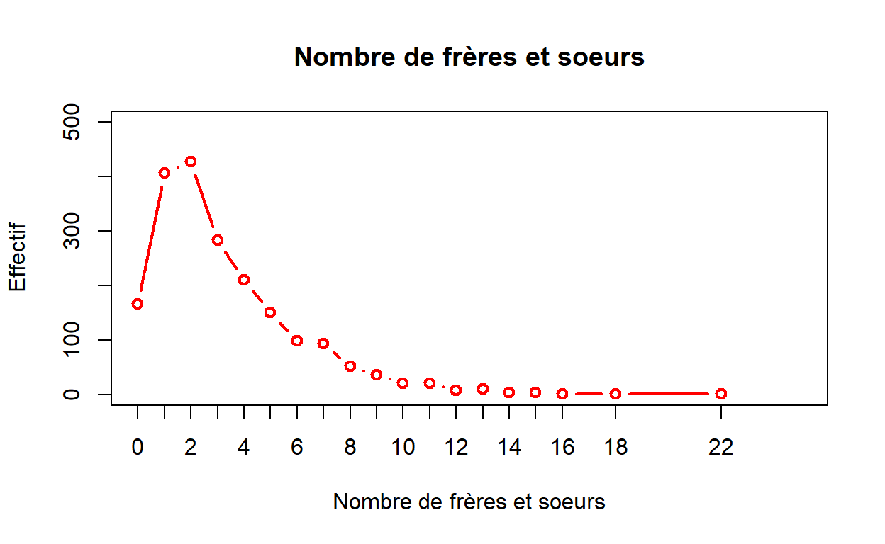
# col= couleur des barres
# main= titre du grahique
# ylab= titre de l'axe y
# xlab= titre de l'axe x
# ylim= graduation de l'axe y
# xlim= graduation de l'axe x
# type= style de lignes
## h lignes verticales
## p points
## l lignes
## o et b lignes et points
## s escaliers
1.1.4. Variables quanti/quanti = Nuage de points
plot(bd$age, bd$heures.tv)
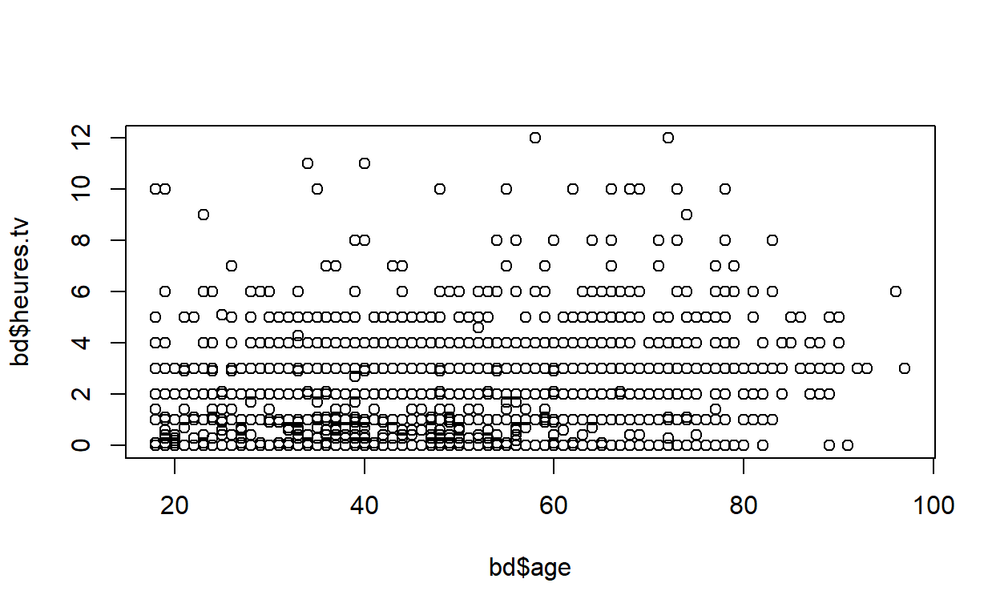
# Modifications possibles parmi tant d'autres: faire varier les points selon les valeurs d'une autre variable par l'ajout de fonctions superposées
plot(bd$age, bd$heures.tv) # var quanti/quanti
points(bd$age[bd$sexe=="Homme"], bd$heures.tv[bd$sexe=="Homme"], pch=16, col="steelblue")
points(bd$age[bd$sexe=="Femme"], bd$heures.tv[bd$sexe=="Femme"], pch=16, col="orange")
legend("topright", legend=c("Homme","Femme"), col=c("steelblue","orange"), pch=c(16))
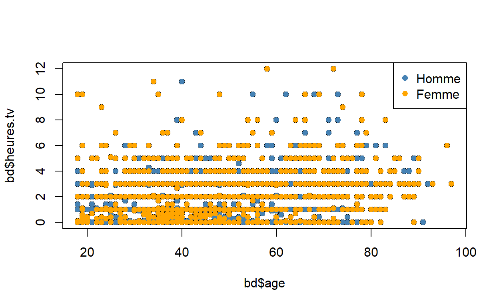
# plot() nuage de points
# points() création d'une séquence de points colorés superposés en fonction de valeurs de variables sélectionnées par condition
# pch= style de points
# col= couleur des points
# legend() ajout d'une légende
colours() # Pour voir la palette de couleurs de base
[1] "white" "aliceblue"
[3] "antiquewhite" "antiquewhite1"
[5] "antiquewhite2" "antiquewhite3"
[7] "antiquewhite4" "aquamarine"
[9] "aquamarine1" "aquamarine2"
[11] "aquamarine3" "aquamarine4"
[13] "azure" "azure1"
[15] "azure2" "azure3"
[17] "azure4" "beige"
[19] "bisque" "bisque1"
[21] "bisque2" "bisque3"
[23] "bisque4" "black"
[25] "blanchedalmond" "blue"
[27] "blue1" "blue2"
[29] "blue3" "blue4"
[31] "blueviolet" "brown"
[33] "brown1" "brown2"
[35] "brown3" "brown4"
[37] "burlywood" "burlywood1"
[39] "burlywood2" "burlywood3"
[41] "burlywood4" "cadetblue"
[43] "cadetblue1" "cadetblue2"
[45] "cadetblue3" "cadetblue4"
[47] "chartreuse" "chartreuse1"
[49] "chartreuse2" "chartreuse3"
[51] "chartreuse4" "chocolate"
[53] "chocolate1" "chocolate2"
[55] "chocolate3" "chocolate4"
[57] "coral" "coral1"
[59] "coral2" "coral3"
[61] "coral4" "cornflowerblue"
[63] "cornsilk" "cornsilk1"
[65] "cornsilk2" "cornsilk3"
[67] "cornsilk4" "cyan"
[69] "cyan1" "cyan2"
[71] "cyan3" "cyan4"
[73] "darkblue" "darkcyan"
[75] "darkgoldenrod" "darkgoldenrod1"
[77] "darkgoldenrod2" "darkgoldenrod3"
[79] "darkgoldenrod4" "darkgray"
[81] "darkgreen" "darkgrey"
[83] "darkkhaki" "darkmagenta"
[85] "darkolivegreen" "darkolivegreen1"
[87] "darkolivegreen2" "darkolivegreen3"
[89] "darkolivegreen4" "darkorange"
[91] "darkorange1" "darkorange2"
[93] "darkorange3" "darkorange4"
[95] "darkorchid" "darkorchid1"
[97] "darkorchid2" "darkorchid3"
[99] "darkorchid4" "darkred"
[101] "darksalmon" "darkseagreen"
[103] "darkseagreen1" "darkseagreen2"
[105] "darkseagreen3" "darkseagreen4"
[107] "darkslateblue" "darkslategray"
[109] "darkslategray1" "darkslategray2"
[111] "darkslategray3" "darkslategray4"
[113] "darkslategrey" "darkturquoise"
[115] "darkviolet" "deeppink"
[117] "deeppink1" "deeppink2"
[119] "deeppink3" "deeppink4"
[121] "deepskyblue" "deepskyblue1"
[123] "deepskyblue2" "deepskyblue3"
[125] "deepskyblue4" "dimgray"
[127] "dimgrey" "dodgerblue"
[129] "dodgerblue1" "dodgerblue2"
[131] "dodgerblue3" "dodgerblue4"
[133] "firebrick" "firebrick1"
[135] "firebrick2" "firebrick3"
[137] "firebrick4" "floralwhite"
[139] "forestgreen" "gainsboro"
[141] "ghostwhite" "gold"
[143] "gold1" "gold2"
[145] "gold3" "gold4"
[147] "goldenrod" "goldenrod1"
[149] "goldenrod2" "goldenrod3"
[151] "goldenrod4" "gray"
[153] "gray0" "gray1"
[155] "gray2" "gray3"
[157] "gray4" "gray5"
[159] "gray6" "gray7"
[161] "gray8" "gray9"
[163] "gray10" "gray11"
[165] "gray12" "gray13"
[167] "gray14" "gray15"
[169] "gray16" "gray17"
[171] "gray18" "gray19"
[173] "gray20" "gray21"
[175] "gray22" "gray23"
[177] "gray24" "gray25"
[179] "gray26" "gray27"
[181] "gray28" "gray29"
[183] "gray30" "gray31"
[185] "gray32" "gray33"
[187] "gray34" "gray35"
[189] "gray36" "gray37"
[191] "gray38" "gray39"
[193] "gray40" "gray41"
[195] "gray42" "gray43"
[197] "gray44" "gray45"
[199] "gray46" "gray47"
[201] "gray48" "gray49"
[203] "gray50" "gray51"
[205] "gray52" "gray53"
[207] "gray54" "gray55"
[209] "gray56" "gray57"
[211] "gray58" "gray59"
[213] "gray60" "gray61"
[215] "gray62" "gray63"
[217] "gray64" "gray65"
[219] "gray66" "gray67"
[221] "gray68" "gray69"
[223] "gray70" "gray71"
[225] "gray72" "gray73"
[227] "gray74" "gray75"
[229] "gray76" "gray77"
[231] "gray78" "gray79"
[233] "gray80" "gray81"
[235] "gray82" "gray83"
[237] "gray84" "gray85"
[239] "gray86" "gray87"
[241] "gray88" "gray89"
[243] "gray90" "gray91"
[245] "gray92" "gray93"
[247] "gray94" "gray95"
[249] "gray96" "gray97"
[251] "gray98" "gray99"
[253] "gray100" "green"
[255] "green1" "green2"
[257] "green3" "green4"
[259] "greenyellow" "grey"
[261] "grey0" "grey1"
[263] "grey2" "grey3"
[265] "grey4" "grey5"
[267] "grey6" "grey7"
[269] "grey8" "grey9"
[271] "grey10" "grey11"
[273] "grey12" "grey13"
[275] "grey14" "grey15"
[277] "grey16" "grey17"
[279] "grey18" "grey19"
[281] "grey20" "grey21"
[283] "grey22" "grey23"
[285] "grey24" "grey25"
[287] "grey26" "grey27"
[289] "grey28" "grey29"
[291] "grey30" "grey31"
[293] "grey32" "grey33"
[295] "grey34" "grey35"
[297] "grey36" "grey37"
[299] "grey38" "grey39"
[301] "grey40" "grey41"
[303] "grey42" "grey43"
[305] "grey44" "grey45"
[307] "grey46" "grey47"
[309] "grey48" "grey49"
[311] "grey50" "grey51"
[313] "grey52" "grey53"
[315] "grey54" "grey55"
[317] "grey56" "grey57"
[319] "grey58" "grey59"
[321] "grey60" "grey61"
[323] "grey62" "grey63"
[325] "grey64" "grey65"
[327] "grey66" "grey67"
[329] "grey68" "grey69"
[331] "grey70" "grey71"
[333] "grey72" "grey73"
[335] "grey74" "grey75"
[337] "grey76" "grey77"
[339] "grey78" "grey79"
[341] "grey80" "grey81"
[343] "grey82" "grey83"
[345] "grey84" "grey85"
[347] "grey86" "grey87"
[349] "grey88" "grey89"
[351] "grey90" "grey91"
[353] "grey92" "grey93"
[355] "grey94" "grey95"
[357] "grey96" "grey97"
[359] "grey98" "grey99"
[361] "grey100" "honeydew"
[363] "honeydew1" "honeydew2"
[365] "honeydew3" "honeydew4"
[367] "hotpink" "hotpink1"
[369] "hotpink2" "hotpink3"
[371] "hotpink4" "indianred"
[373] "indianred1" "indianred2"
[375] "indianred3" "indianred4"
[377] "ivory" "ivory1"
[379] "ivory2" "ivory3"
[381] "ivory4" "khaki"
[383] "khaki1" "khaki2"
[385] "khaki3" "khaki4"
[387] "lavender" "lavenderblush"
[389] "lavenderblush1" "lavenderblush2"
[391] "lavenderblush3" "lavenderblush4"
[393] "lawngreen" "lemonchiffon"
[395] "lemonchiffon1" "lemonchiffon2"
[397] "lemonchiffon3" "lemonchiffon4"
[399] "lightblue" "lightblue1"
[401] "lightblue2" "lightblue3"
[403] "lightblue4" "lightcoral"
[405] "lightcyan" "lightcyan1"
[407] "lightcyan2" "lightcyan3"
[409] "lightcyan4" "lightgoldenrod"
[411] "lightgoldenrod1" "lightgoldenrod2"
[413] "lightgoldenrod3" "lightgoldenrod4"
[415] "lightgoldenrodyellow" "lightgray"
[417] "lightgreen" "lightgrey"
[419] "lightpink" "lightpink1"
[421] "lightpink2" "lightpink3"
[423] "lightpink4" "lightsalmon"
[425] "lightsalmon1" "lightsalmon2"
[427] "lightsalmon3" "lightsalmon4"
[429] "lightseagreen" "lightskyblue"
[431] "lightskyblue1" "lightskyblue2"
[433] "lightskyblue3" "lightskyblue4"
[435] "lightslateblue" "lightslategray"
[437] "lightslategrey" "lightsteelblue"
[439] "lightsteelblue1" "lightsteelblue2"
[441] "lightsteelblue3" "lightsteelblue4"
[443] "lightyellow" "lightyellow1"
[445] "lightyellow2" "lightyellow3"
[447] "lightyellow4" "limegreen"
[449] "linen" "magenta"
[451] "magenta1" "magenta2"
[453] "magenta3" "magenta4"
[455] "maroon" "maroon1"
[457] "maroon2" "maroon3"
[459] "maroon4" "mediumaquamarine"
[461] "mediumblue" "mediumorchid"
[463] "mediumorchid1" "mediumorchid2"
[465] "mediumorchid3" "mediumorchid4"
[467] "mediumpurple" "mediumpurple1"
[469] "mediumpurple2" "mediumpurple3"
[471] "mediumpurple4" "mediumseagreen"
[473] "mediumslateblue" "mediumspringgreen"
[475] "mediumturquoise" "mediumvioletred"
[477] "midnightblue" "mintcream"
[479] "mistyrose" "mistyrose1"
[481] "mistyrose2" "mistyrose3"
[483] "mistyrose4" "moccasin"
[485] "navajowhite" "navajowhite1"
[487] "navajowhite2" "navajowhite3"
[489] "navajowhite4" "navy"
[491] "navyblue" "oldlace"
[493] "olivedrab" "olivedrab1"
[495] "olivedrab2" "olivedrab3"
[497] "olivedrab4" "orange"
[499] "orange1" "orange2"
[501] "orange3" "orange4"
[503] "orangered" "orangered1"
[505] "orangered2" "orangered3"
[507] "orangered4" "orchid"
[509] "orchid1" "orchid2"
[511] "orchid3" "orchid4"
[513] "palegoldenrod" "palegreen"
[515] "palegreen1" "palegreen2"
[517] "palegreen3" "palegreen4"
[519] "paleturquoise" "paleturquoise1"
[521] "paleturquoise2" "paleturquoise3"
[523] "paleturquoise4" "palevioletred"
[525] "palevioletred1" "palevioletred2"
[527] "palevioletred3" "palevioletred4"
[529] "papayawhip" "peachpuff"
[531] "peachpuff1" "peachpuff2"
[533] "peachpuff3" "peachpuff4"
[535] "peru" "pink"
[537] "pink1" "pink2"
[539] "pink3" "pink4"
[541] "plum" "plum1"
[543] "plum2" "plum3"
[545] "plum4" "powderblue"
[547] "purple" "purple1"
[549] "purple2" "purple3"
[551] "purple4" "red"
[553] "red1" "red2"
[555] "red3" "red4"
[557] "rosybrown" "rosybrown1"
[559] "rosybrown2" "rosybrown3"
[561] "rosybrown4" "royalblue"
[563] "royalblue1" "royalblue2"
[565] "royalblue3" "royalblue4"
[567] "saddlebrown" "salmon"
[569] "salmon1" "salmon2"
[571] "salmon3" "salmon4"
[573] "sandybrown" "seagreen"
[575] "seagreen1" "seagreen2"
[577] "seagreen3" "seagreen4"
[579] "seashell" "seashell1"
[581] "seashell2" "seashell3"
[583] "seashell4" "sienna"
[585] "sienna1" "sienna2"
[587] "sienna3" "sienna4"
[589] "skyblue" "skyblue1"
[591] "skyblue2" "skyblue3"
[593] "skyblue4" "slateblue"
[595] "slateblue1" "slateblue2"
[597] "slateblue3" "slateblue4"
[599] "slategray" "slategray1"
[601] "slategray2" "slategray3"
[603] "slategray4" "slategrey"
[605] "snow" "snow1"
[607] "snow2" "snow3"
[609] "snow4" "springgreen"
[611] "springgreen1" "springgreen2"
[613] "springgreen3" "springgreen4"
[615] "steelblue" "steelblue1"
[617] "steelblue2" "steelblue3"
[619] "steelblue4" "tan"
[621] "tan1" "tan2"
[623] "tan3" "tan4"
[625] "thistle" "thistle1"
[627] "thistle2" "thistle3"
[629] "thistle4" "tomato"
[631] "tomato1" "tomato2"
[633] "tomato3" "tomato4"
[635] "turquoise" "turquoise1"
[637] "turquoise2" "turquoise3"
[639] "turquoise4" "violet"
[641] "violetred" "violetred1"
[643] "violetred2" "violetred3"
[645] "violetred4" "wheat"
[647] "wheat1" "wheat2"
[649] "wheat3" "wheat4"
[651] "whitesmoke" "yellow"
[653] "yellow1" "yellow2"
[655] "yellow3" "yellow4"
[657] "yellowgreen"
1.1.5. Variables quali/quanti = Boite à moustaches
plot(bd$sexe, bd$heures.tv)
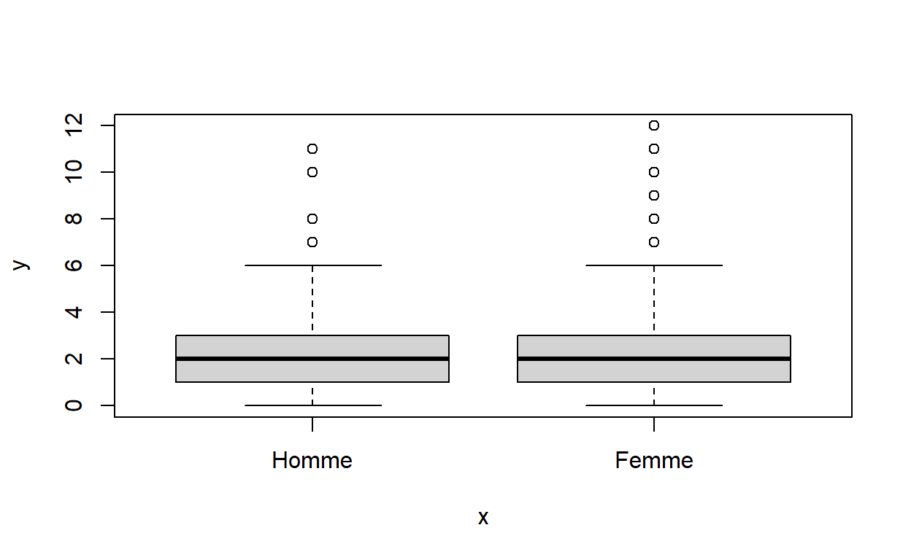
# variable indépendante à gauche (x), dépendante à droite (y)
# Notation formule: les formules passent la variable y en premier, donc la notation formule de la fonction générique plot(x, y) est plot(y ~ x)
1.1.6. Variable quantitative = Graphique de densité
# Ajout de la fonction de densité à la fonction plot()
plot(density(bd$heures.tv, na.rm = TRUE), main = "Heures d'écoute de télé")
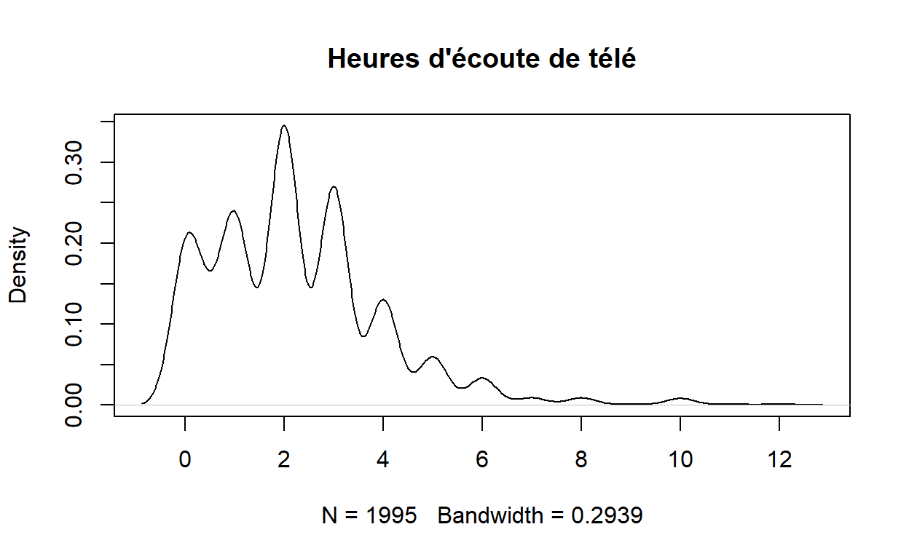
# Ajout de la fonction lines() qui permet de superposer plusieurs éléments graphiques
plot(density(bd$age[bd$sexe == "Femme"]), lwd = 3, col = "red", main = "Titre du graphique")
lines(density(bd$age[bd$sexe == "Homme"]), lwd = 3, col = "blue")
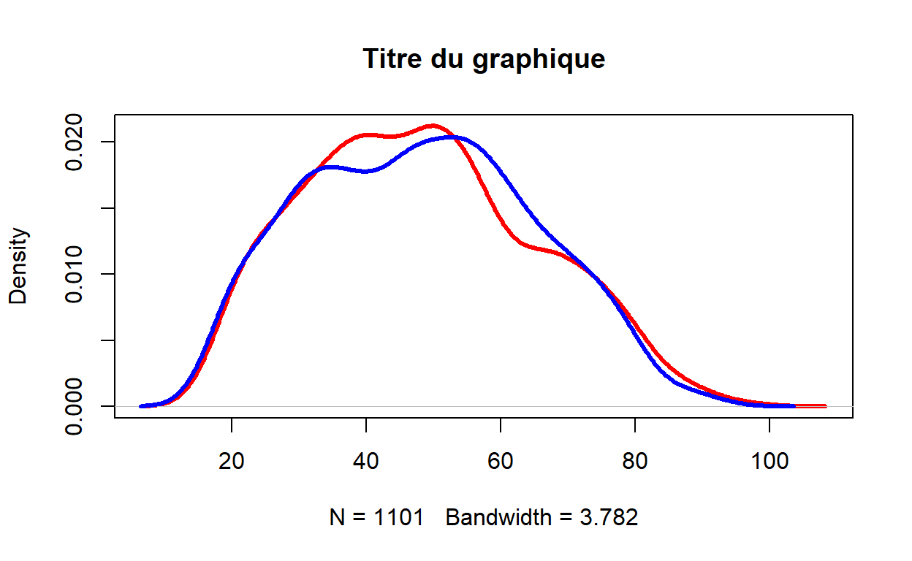
# lwd= largeur des lignes
1.2. Diagramme à barres: fonction barplot()
tb.eff <- table(bd$trav.satis, bd$sexe) # tableau d'effectifs
tb.prop <- cprop(tb.eff, total = FALSE) # tableau de proportions
# Graphique à barres avec table d'effectifs superposés
barplot(tb.eff , legend = levels(bd$trav.satis))
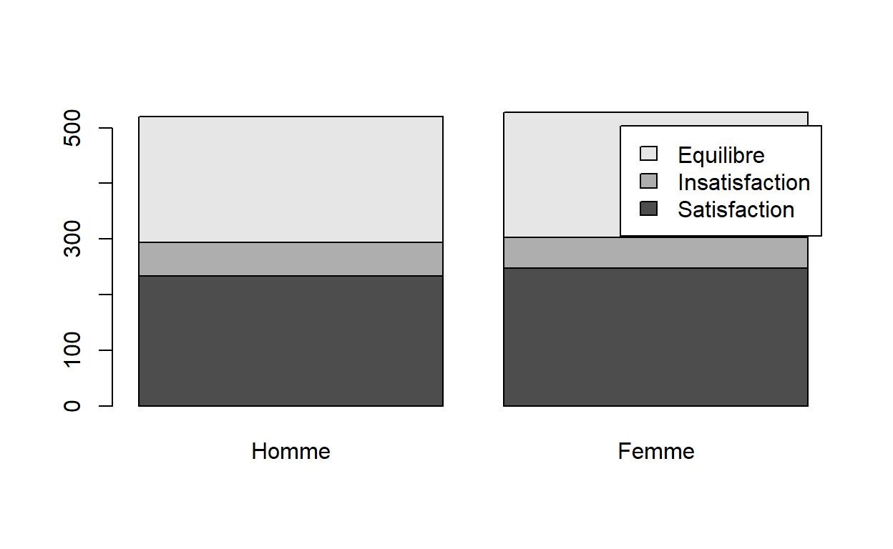
# legend = levels pour faire apparaitre les catégories de la variable choisie
# Graphique à barres avec table de proportions
barplot(tb.prop, beside = TRUE, xlab = "Satisfaction", ylab = "pourcentages", las=2, ylim=c(0, 100),
col = c("blue", "green", "orange"), legend = levels(bd$trav.satis))
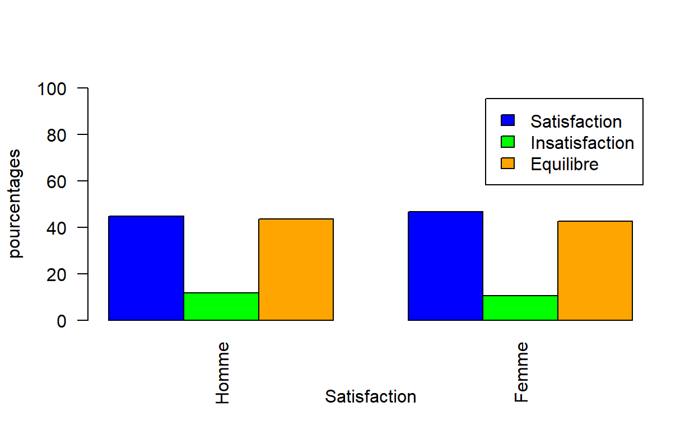
# beside = TRUE barres côtes à côtes
# las=2 intitulés à la verticale
1.3. Histogramme: fonction hist()
# Histogramme avec quelques arguments
hist(bd$age, main = "Age", col="violetred2", breaks = 8, xlab = "Age", ylab = "Effectif", labels = TRUE)
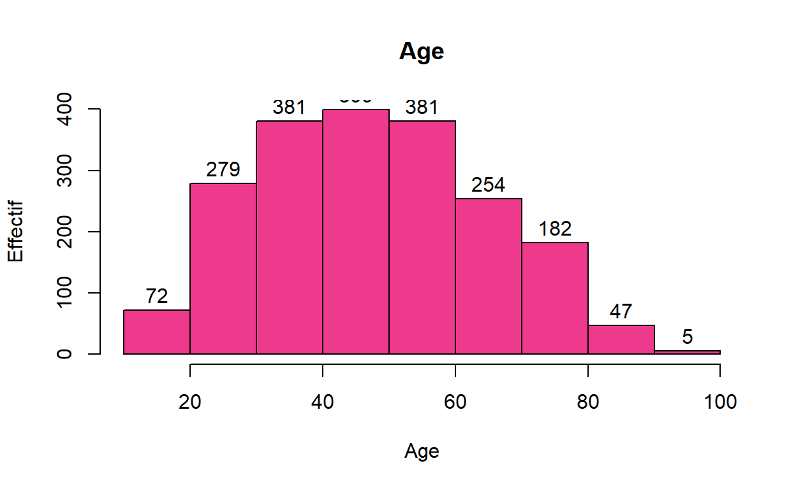
# main= titre du grahique
# col= couleur des barres
# breaks= nombre de "barres"
# xlab= titre de l'axe x
# ylab= titre de l'axe y
# labels= affichage des valeurs
# Pour ajouter une ligne de densité:
## argument prob = TRUE affichage de la ligne de densité
## fonction lines(density(bd$age, na.rm = TRUE), lwd = 4, col = "green")
La très pratique fonction par()
par(mfrow = c(1, 2), bg="gray", col.axis="green", mar=c(5, 5, 5, 5))
hist(bd$age[bd$sport == "Oui"], main = "Sportif", col = "chartreuse2")
hist(bd$age[bd$sport == "Non"], main = "Non sportif", col = "cyan4")
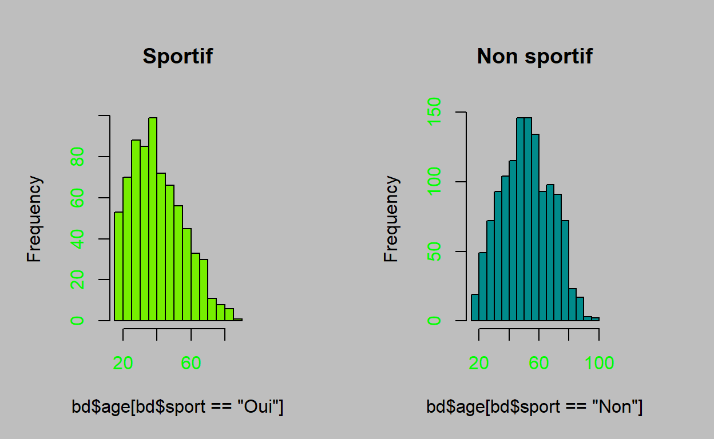
# par() disposition des graphiques
# bg= couleur du "background"
# col.axis= couleur de la numérotation des axes
# mar= grosseur des marges
1.4. Boite à moustaches
boxplot(bd$heures.tv, main="Heures d'écoute de la télé", col="green", xlab = "légende horizontale", ylab = "Heures d'écoute" )
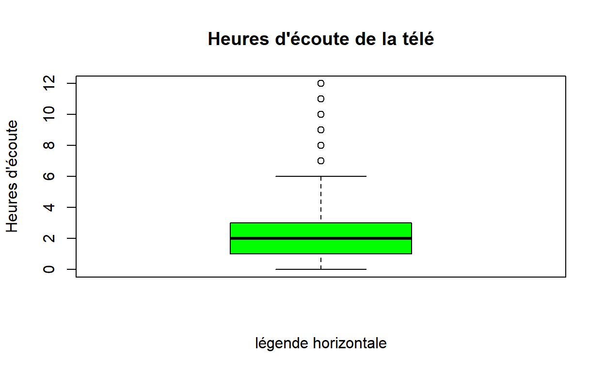
## Comparer groupe avec la notation "formule" (y ~ x)
boxplot(age ~ hard.rock, bd)
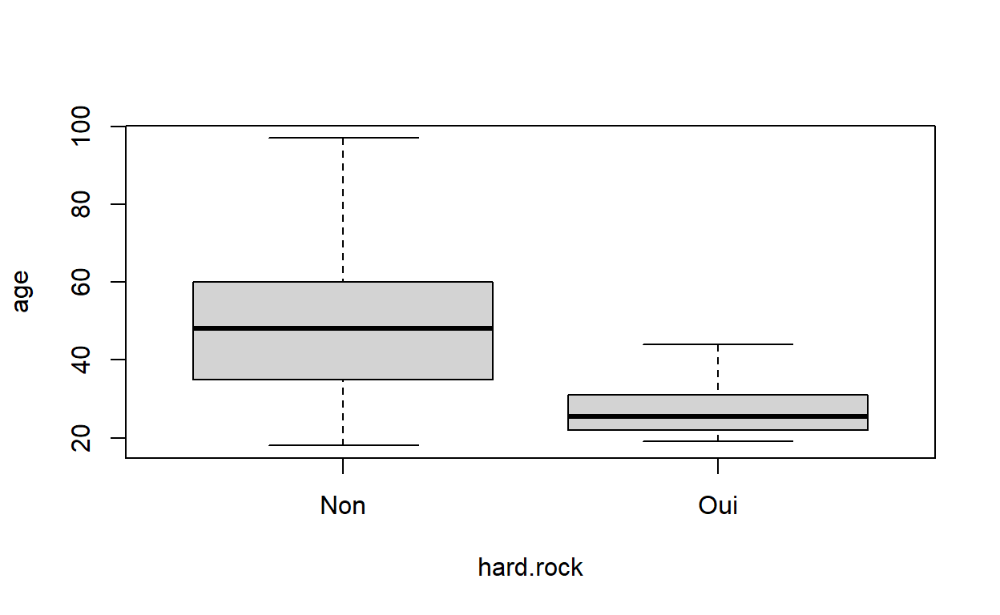
1.5. Autres graphiques divers
# Graphique mosaique
mosaicplot(sport ~ sexe, bd, las = 1, shade = TRUE, main="Niveau de qualification selon le sexe")
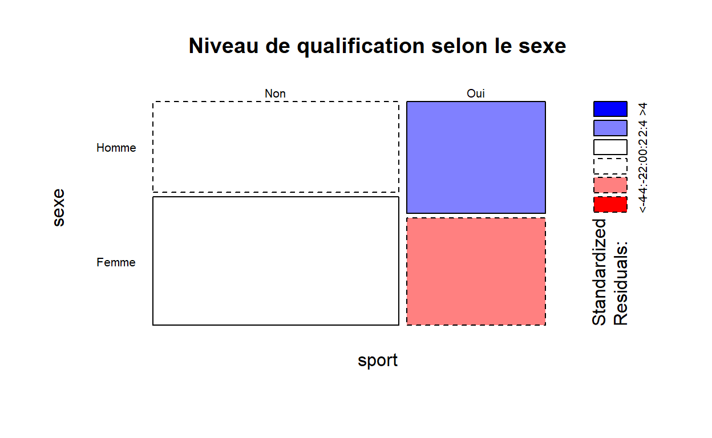
# Chaque boite correspond à une cellule
# largeur: pourcentages en colonnes
# hauteur: pourcentages en lignes
# Couleurs: résidus du chi2
# diagramme Q-Q (Module car)
qqPlot(bd$heures.tv, col=colors()[9], col.lines=colors()[30], lwd=4, pch=1)
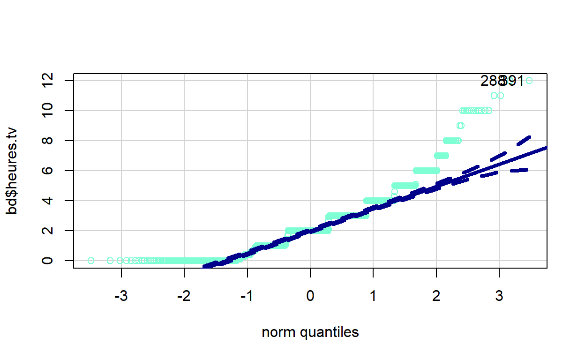
[1] 288 391
# Compare à une distribution normale, quantile par quantile
# Trace en pointillé l'intervalle de confiance à 95%
# Identifie les points les plus éloignés de leur quantile normal
# col= sélection de couleurs des points par position dans la palette colors()
# col.lines= sélection de couleurs des lignes par position dans la palette colors()
# lwd= largeur des lignes
# pch= type de points
# Nuage de points + ligne de régression non paramétrique et boites à moustache sur les axes (Module car)
scatterplot(heures.tv ~ age, data=bd)
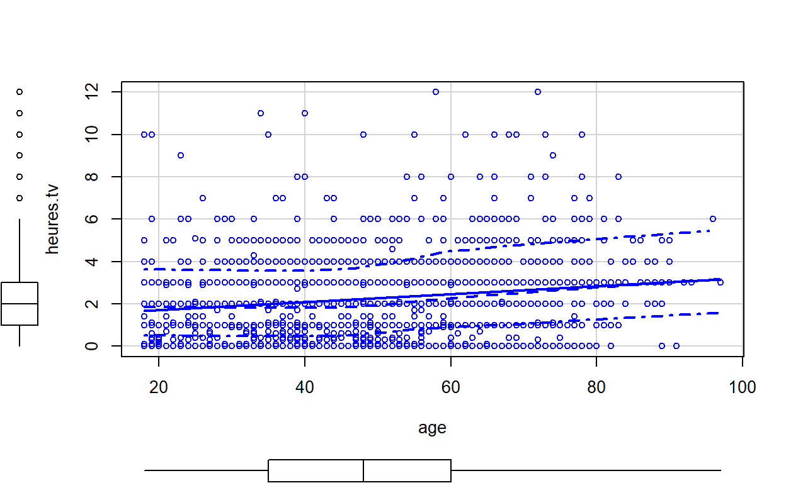
2. Package graphique ggplot2 (grammar of graphics)
- ggplot fonctionnne en additionnant des composantes (couches)
- ggplot() spécifie le tableau source des données
- geom(): géométrie, ie choix du graphique (ex:geom_histogram)
- aes(): aestetics, ie propriétés visuelles incluant l’axe des x , des y, la couleur des lignes ( colour ), …
- Ensuite on peut personnaliser avec des titres, légendes, thèmes, facettes et tout un tas d’options
https://ggplot2.tidyverse.org/reference/
2.1. geom_histogram = Histogramme
ggplot(bd) +
geom_histogram(aes(x = age))
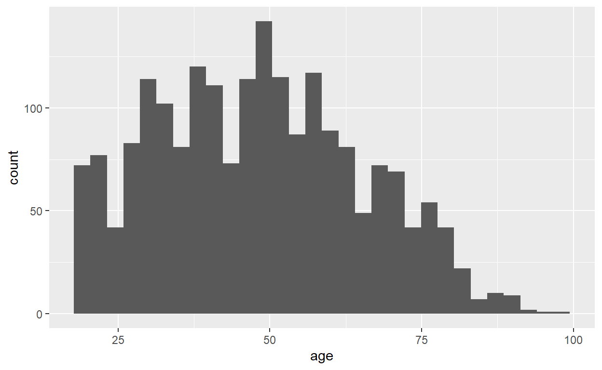
ggplot(bd) +
geom_histogram(aes(x = age), fill="orchid1", colour = "white", binwidth = 5) +
ggtitle("Age des répondants") +
xlab("Age") +
ylab("Effectifs")
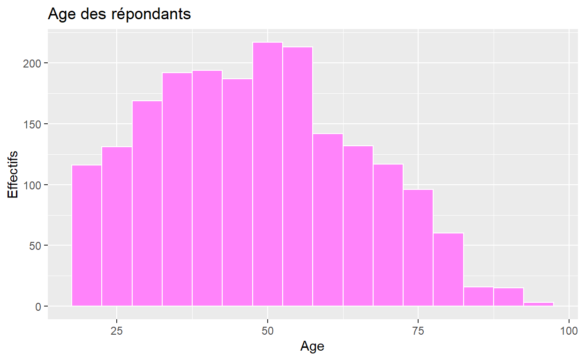
Le “faceting”
# Le faceting permet d’effectuer plusieurs fois le même graphique selon les valeurs d’une ou plusieurs variables qualitatives, ICI (~sexe).
ggplot(bd) +
geom_histogram(aes(x = age), fill="orchid1", colour = "white", breaks = c(0, 20, 40, 60, 80, 100)) +
facet_grid(~sexe) +
ylab("Effectifs")
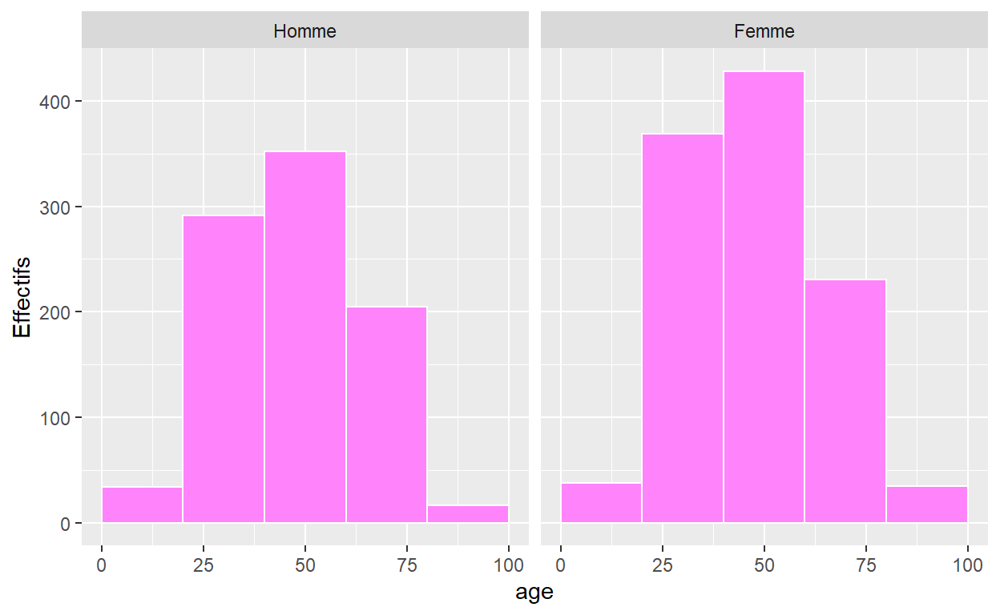
2.2. geom_bar - Graphique en barres
ggplot(bd) +
geom_bar(aes(x = trav.satisf), fill = "thistle3", width = .7) +
xlab("Satisfaction") +
ylab("Effectifs") +
ggtitle("Satisfaction au travail")
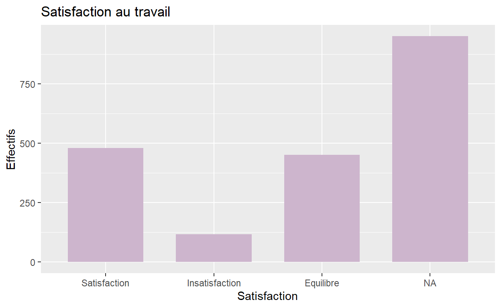
Le “mapping”
# si on veut faire varier la couleur en fonction des valeurs prises par une variable, on réalise un "mappage"
# on doit alors placer l’attribut graphique à l’intérieur de aes()
ggplot(bd) +
geom_bar(aes(x = occup, fill = sexe)) # position = "stack" par défaut des effectifs
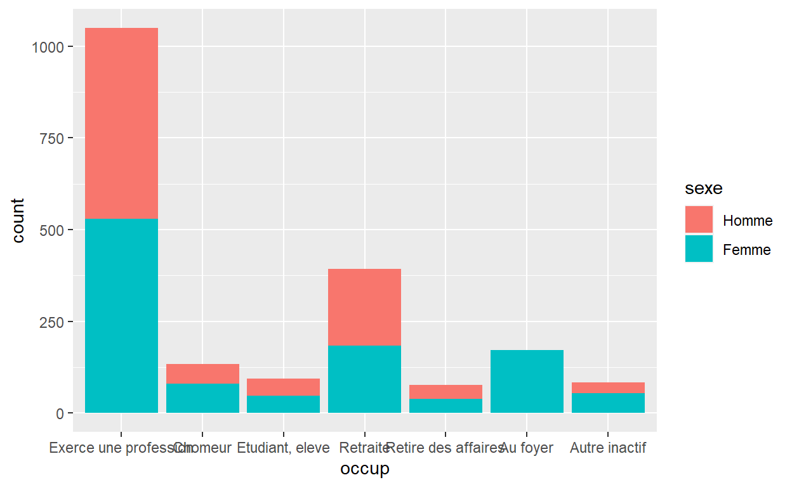
ggplot(bd) +
geom_bar(aes(x = occup, fill = sexe), position = "dodge") # position = "dodge" pour effectifs côte à côte
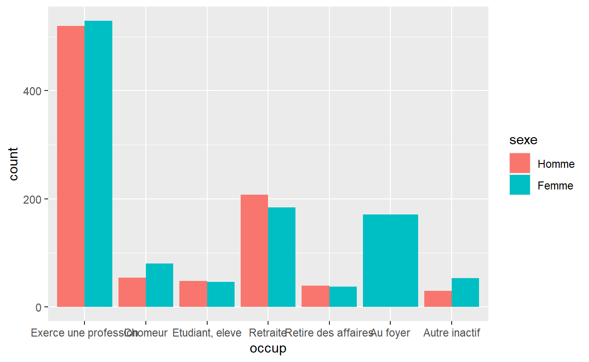
ggplot(bd) +
geom_bar(aes(x = occup, fill = sexe), position = "fill") # position = "fill" pour représenter les proportions
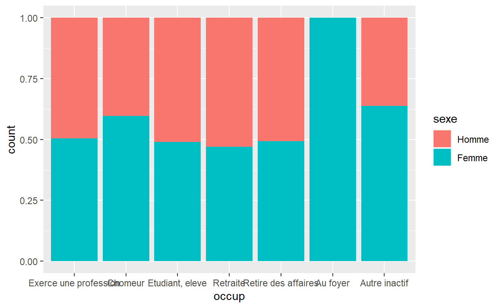
2.3. geom_point: Nuage de points
ggplot(bd) +
geom_point(aes(x = age, y = freres.soeurs, color = sexe), size=3, pch=19) +
scale_color_brewer("sexe", palette = "Accent") +
theme(legend.position = "bottom", legend.box = "vertical")
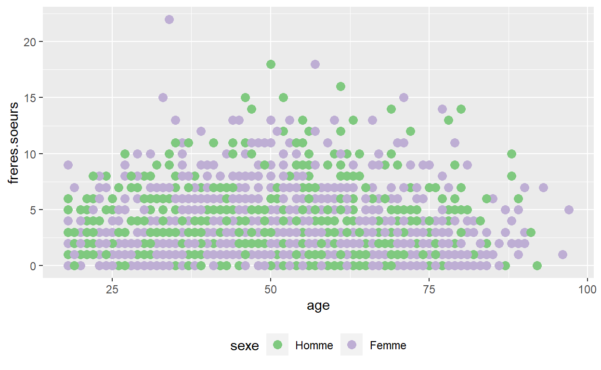
# Color à l'intérieur de aes() permet de faire varier la couleur des points en fonction des valeurs d’une troisième variable
# Peut aussi faire varier grosseur avec size() et transparence avec alpha()
### Autre répertoire de couleurs scale_color_brewer: RColorBrewer::display.brewer.all()
ggplot(bd) +
geom_point(aes(x = age, y = heures.tv, color=sexe, size=heures.tv), alpha=0.2) +
scale_size("Heures de télé", range = c(1,10)) +
scale_x_continuous("Age", limits = c(15,100)) +
scale_y_continuous("Heures de télé", limits = c(0,15))
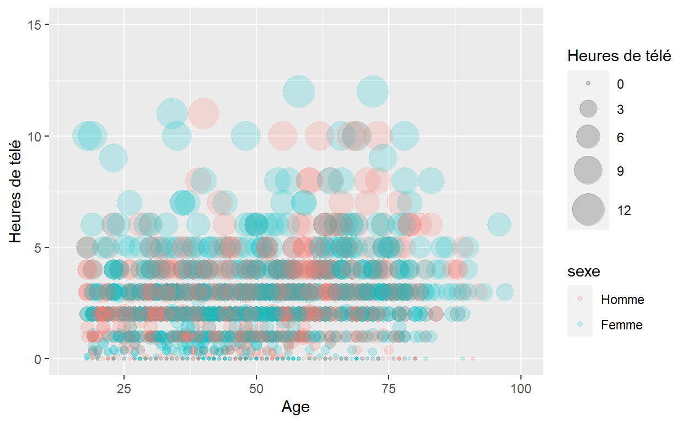
# Pour une couleur spécifique, il faudrait le mettre à l'extérieur de la parenthèse aes
# size= à l'intérieur de eas permet de faire varier la grosseur des points selon une variable quantitative
# argument scale permet de définir les limites des échelles x et y et leur légende respective
### ajouter une droite de régression + lignes de densité
ggplot(bd, aes(x=age, y=freres.soeurs))+
geom_point(col="steelblue2")+
geom_smooth(method="lm", col="thistle3")+
geom_density2d(color = "orange") +
scale_x_log10()
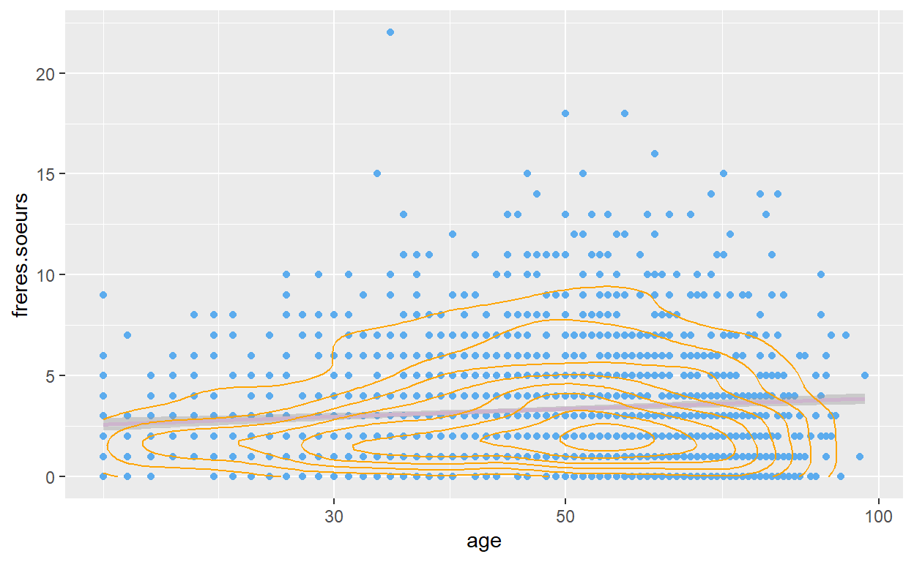
2.4. geom_boxplot - boite à moustache
### On passe en y la variable quanti et en x la variable quali
ggplot(bd) +
geom_boxplot(aes(x = trav.satisf, y =age), varwidth = TRUE, fill = "midnightblue", color = "chartreuse1") +
ggtitle("Pratique de la religion")
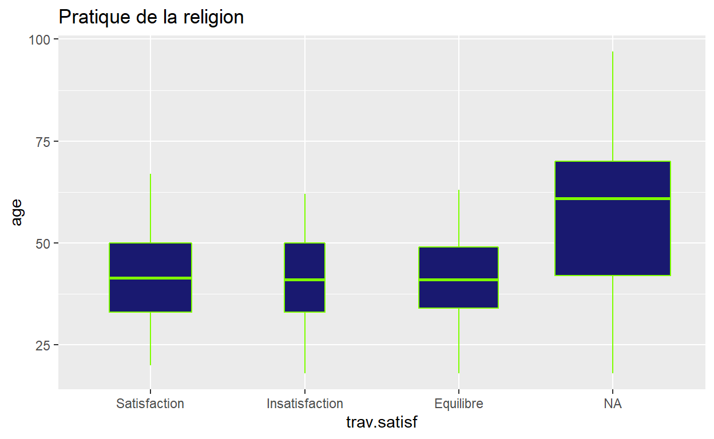
### on fait varier la couleur selon une variable et on "flip" le tout
ggplot(bd, aes(x = sexe, y = freres.soeurs, color = sexe)) + geom_boxplot() + coord_flip()
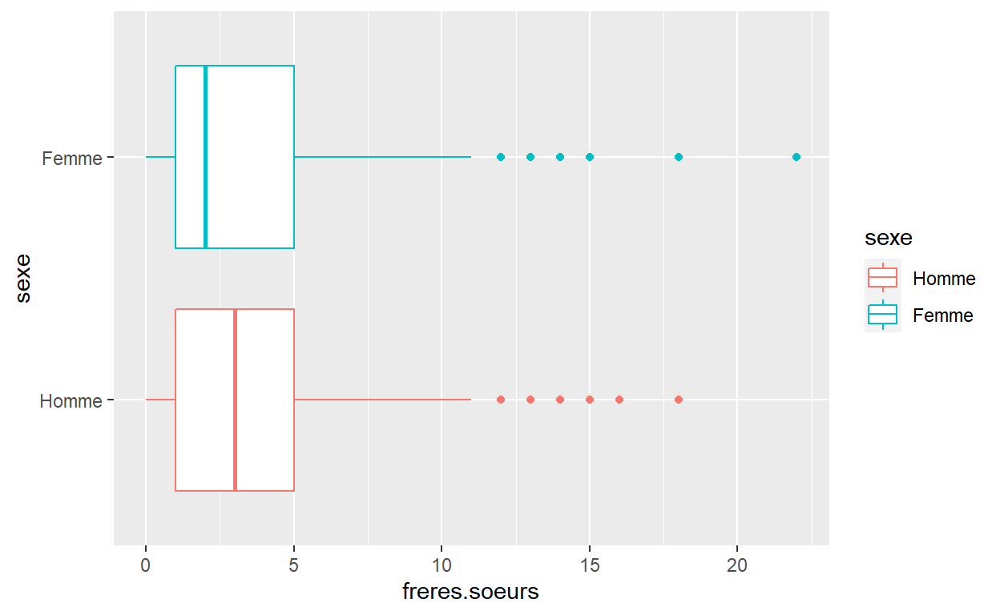
### Graphique de densité
# test Comparer des distributions avec leur densité
ggplot(bd, aes(x = age, color = sexe, fill=sexe)) + geom_density(alpha=0.55)
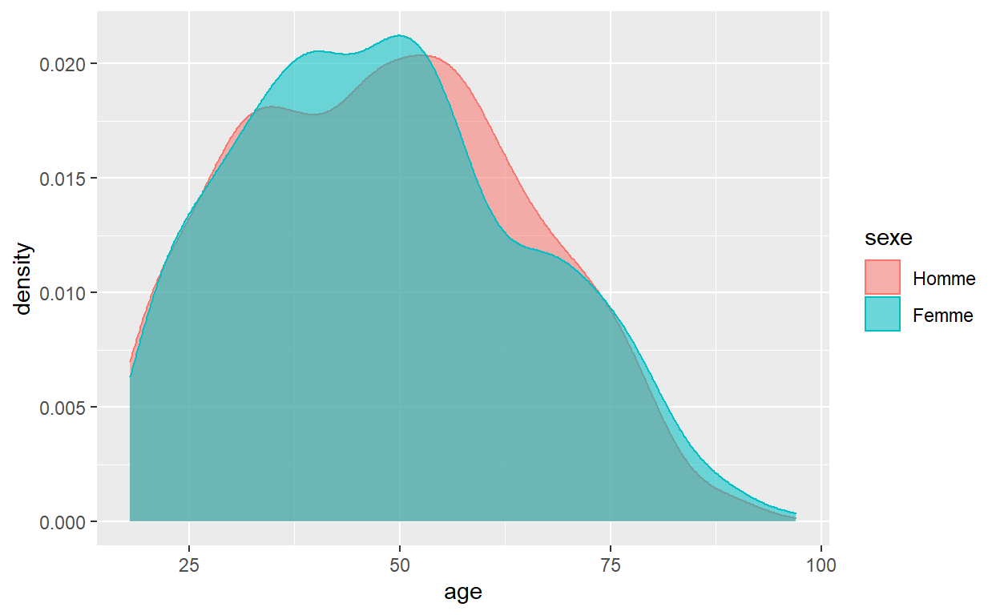